🌿 Cuidados naturais recomendados
A sua pele do jeito que você lembra — calma, macia, sem vermelhidão. Uma rotina simples de 3 passos que respeita quem você já é.
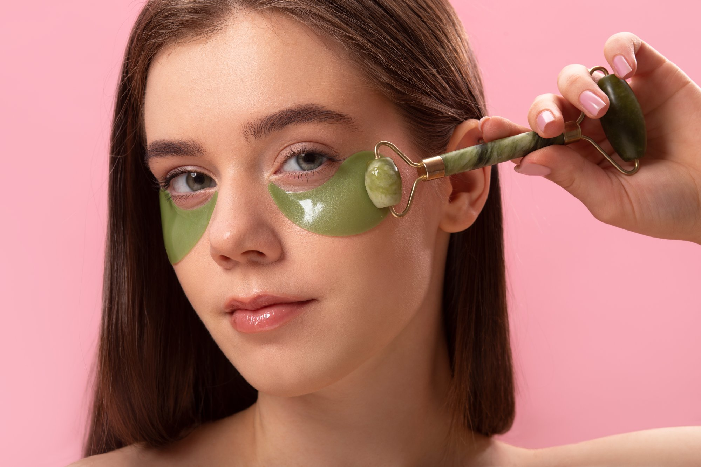
Começa por onde quiser — cada passo é um gesto de carinho com a sua pele.
Seis perguntas simples que revelam o que sua pele tenta te dizer todo dia — aquela secura, aquela vermelhidão, aquela sensação de que algo não está certo.
Um guia simples com os ingredientes certos para devolver à sua pele a calma que ela merece — sem exageros, sem risco, sem choros na frente do espelho.
Cada pele tem sua história. O protocolo Refúgio respeita e protege a sua.
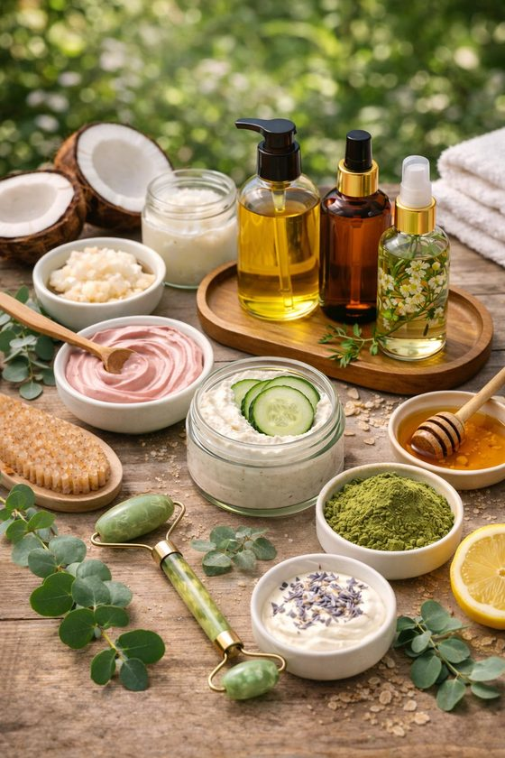
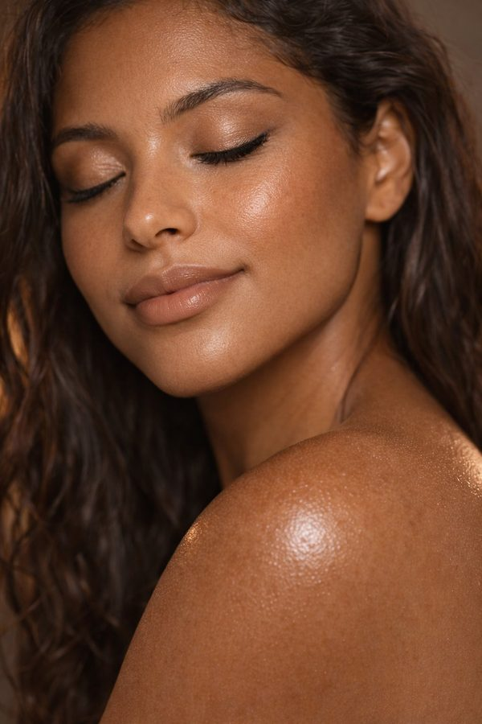
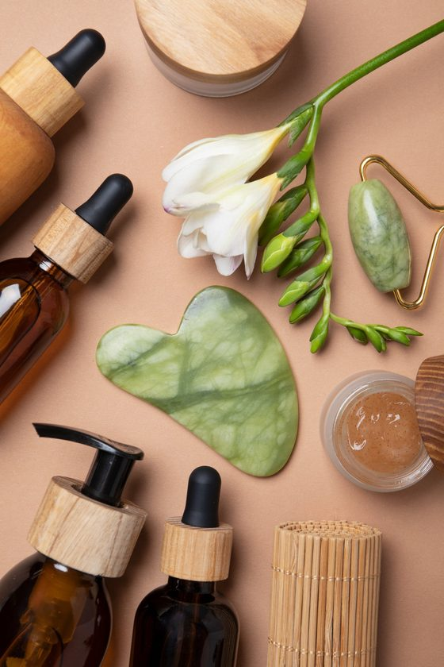
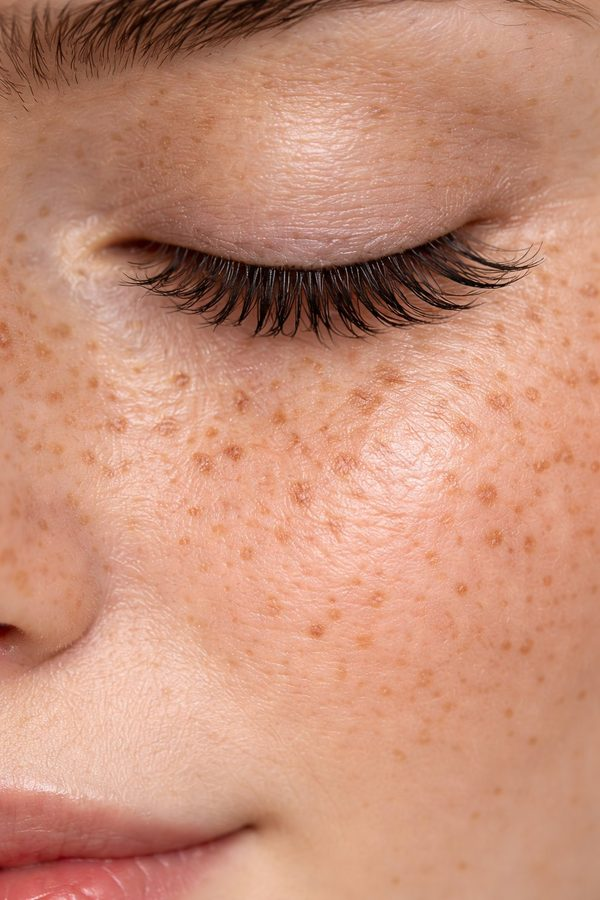
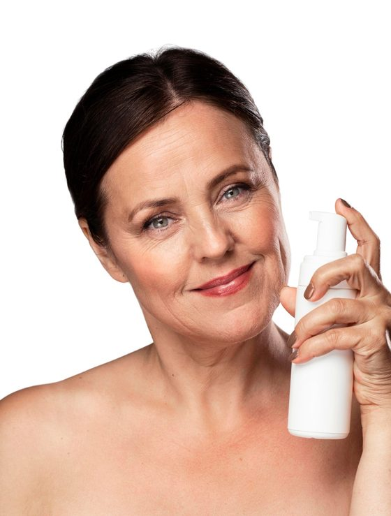
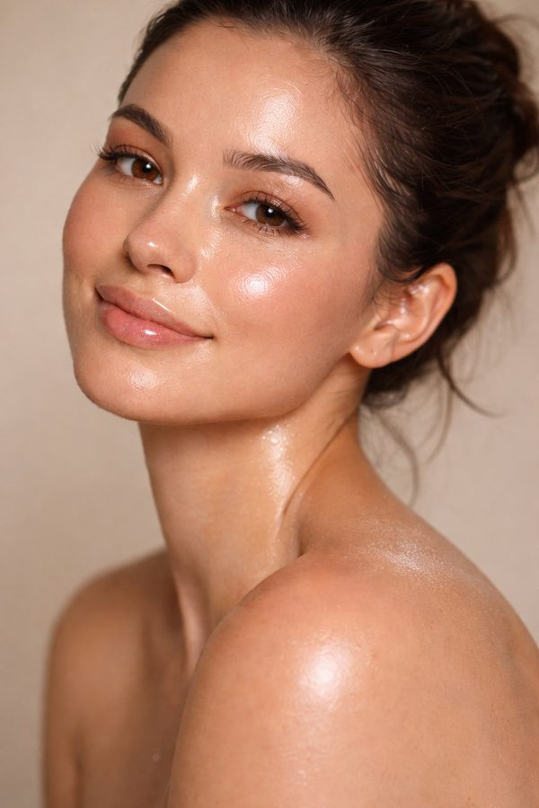
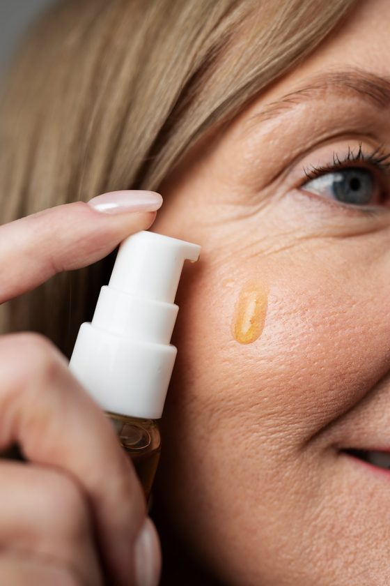
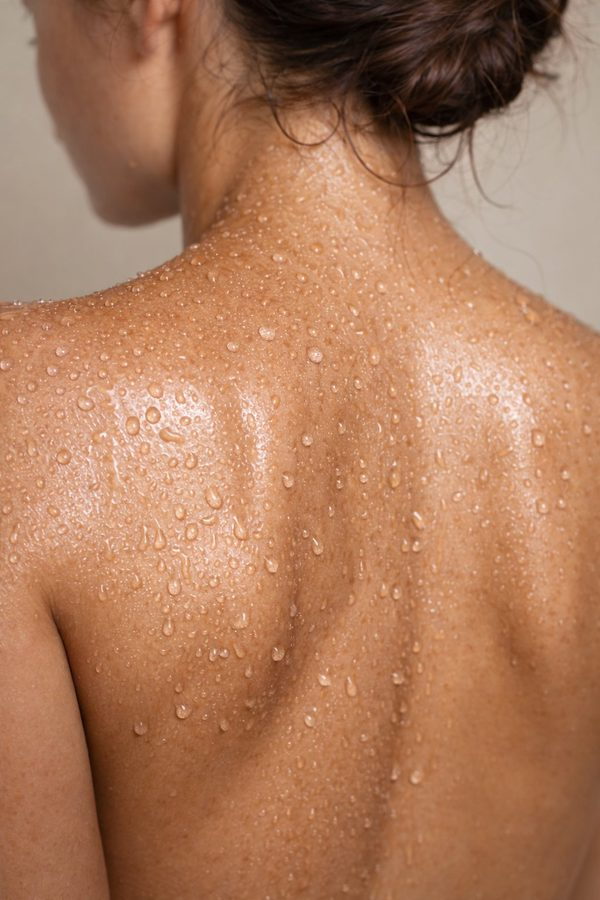
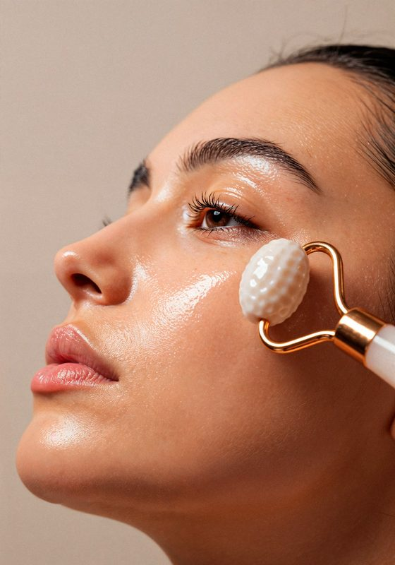
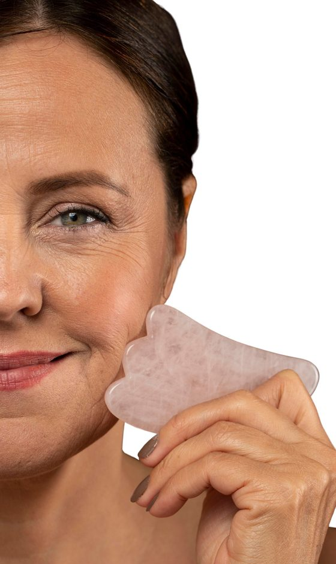
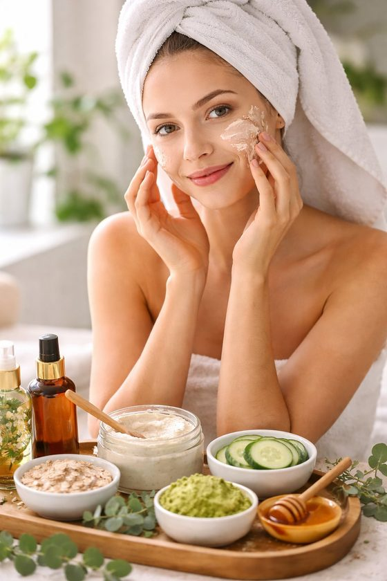
Você não precisa de mais produtos. Você precisa do produto certo, na hora certa, da forma certa. E de uma rotina que respeite a pele que você tem.
Depois de anos usando produtos errados, finalmente minha pele parou de descamar e irritar. O protocolo de 3 passos mudou tudo.
Descobri que minha barreira estava destruída. Com niacinamida e centella em 3 semanas minha vermelhidão reduziu mais de 70%.
Tentei mil coisas e sempre piorava. Com o Refúgio aprendi que menos é mais — minha pele reagiu pela primeira vez de forma positiva.
Eu tinha medo de qualquer coisa nova na minha pele. O diagnóstico me ajudou a entender exatamente o que estava acontecendo — e finalmente parei de ter crises de irritação toda semana.
Em duas semanas seguindo o protocolo a minha pele ficou mais firme, menos vermelha e eu finalmente consigo usar protetor solar sem arder. Parece simples mas pra mim foi uma revolução.